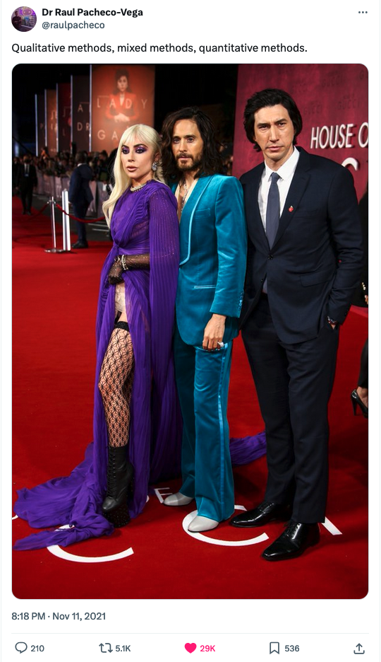
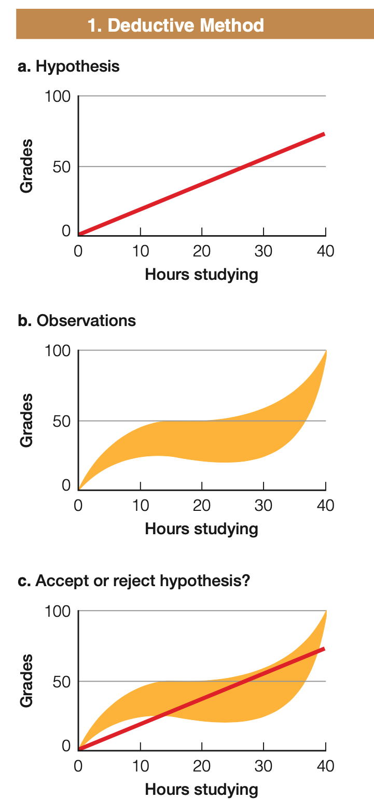

Research Design
in Social Science
üôÑ Why research?
“Research results in the creation of knowledge to solve a problem, answer a question, and better describe or understand something.” 1
Why?
stories
Religion based stories; nature & natural laws called as metaphysics
science
Knowledge based upon observations rather than on belief.
üî¨ Science
“A set of logical, systematic, documented methods for investigating nature and natural processes; the knowledge produced by these investigations.”1
Define Research
“the process of finding solutions to a problem after a thorough study and analysis of the situational factors”1
Define Research
“is about asking questions, exploring problems and reflecting on what emerges in order to make meaning from the data and tell the research story”1
Angle
Perspective
Research
approach
Research Approach1
“Research approaches are plans and the procedures for research that span the steps from broad assumptions to detailed methods of data collection, analysis, and interpretation.”
Research approaches:
Qualitative,
Quantitative, and
Mixed methods.

Qualitative approach
“using words”
“for exploring and understanding the meaning individuals or groups ascribe to a social or human problem.”
open-ended questions and responses
flexible report structure

Quantitative approach
use numbers
“for testing objective theories by examining relationship among variables”
closed-ended questions and responses
set structure

Mixed methods approach
- “an inquiry involving collecting both quantitative and qualitative data, integrating the two forms of data, and using distinct designs that may involve philosophical assumptions and theoretical frameworks.”

Research framework
“Research approach involves the intersection of philosophical assumptions, designs and specific methods.”
Philosophical world-views
“A general philosophical orientation about the world and the nature of research that a researcher brings to a study”
- Post positivist
- Constructionist
- Transformative
- Pragmatic
Research designs
“These are types of inquiry within qualitative, quantitative, and mixed methods approaches that provide specific direction for procedures in a research study”
- Experiments
- Survey
- Ethnographic
- Explanatory sequential
Research methods
“Involve the forms of data collection, analysis, and interpretation that researchers propose for their studies”
- Questions
- Data collection
- Data analysis
- Interpretation
- Validation
ü•ò Research design steps:
Identify a research problem
Review existing literature
Formulate research questions or hypotheses
Choose a research design
Select a research method
Ensure ethical considerations
Define the population and sample
Develop data collection instruments
Conduct a pilot study
Collect data
Analyse data
Interpret and discuss results
Write the research report
Disseminate findings
Reflect and review
Identify a
research problem

The research topic1
“The topic is the subject or subject matter of a proposed study” like:
“The topic becomes the central idea to learn about or to explore”
“Topic grounds us and provides a sign of what we are studying.”
How to write a working Title?
Tip
“My study is about ………………………………..”
Good topic or question
“Adds to the pool of research knowledge in the literature available on the topic, …
Replicate past studies, …
Lifts up the voices of under-represented groups or individuals, …
Helps to address social justice, or …
Transforms the ideas and beliefs of the researcher.”
üîç A new perspective or ‚Äúangle‚Äù to the existing literature:
Studying an unusual location (e.g., rural India).
Examining an unusual group of participants (e.g., refugees).
Taking a perspective that may not be expected and reverses the expectation (e.g., why marriages do work rather than do not work).
Providing novel means of collecting data (e.g., collect sounds).
Presenting results in unusual ways.
Studying a timely topic (e.g., immigration issues)
Studies addressing the problem
Reviewing studies that have examined the issue.
Summarize large groups of studies instead of individual ones.
Justify the importance of the study
To create distinction between past studies and the proposed one.
Deficiencies in past literature
Topics have not been explored with a particular group, sample, or population;
The literature may need to be replicated or repeated;
The voices of underrepresented groups left
“Future research” to look for gaps.
Significance of a study for audiences
3 or 4 reasons that the study adds to scholarly research and literature in the field.
3 or 4 reasons about how the study helps improve practice.
3 or 4 reasons as to why the study will improve policy or decision making.
Literature Review

How does this research contribute to the literature?
“Research is to see what everybody else has seen, and to think what nobody else has thought.”
– Albert Szent-Gyorgyi
üìö Why literature review?
“literature review helps to determine whether the topic is worth studying, and it provides insight into ways in which the researcher can limit the scope to a needed area of inquiry.”
“to consider whether the research topic can and should be researched”
üìö Purpose of Literature Review:
It shares with the reader the results of other studies that are closely related to the one being undertaken.
It relates a study to the larger, ongoing dialogue in the literature, filling in gaps and extending prior studies
It provides a framework for establishing the importance of the study as well as a benchmark for comparing the results with other findings.
üìö Lit. rev. sources
Textbooks
Journals
Theses
Conference proceedings
Unpublished manuscripts
Reports
Newspapers
The Internet
üò≠ Literature
review process

üò≠ Literature Review Process[^24]
Begin by identifying key words.
Searching the databases like Google Scholar, Web of Science, EBSCO, ProQuest, and JSTOR or you can also use website like Library Genesis to download books and papers.
Locate about 50 reports of research in articles or books related to research on your topic.
Skim this initial group of articles or chapters, and collect those that are central to your topic.
Designing a literature map … a visual picture of groupings of the literature on the topic that illustrates how your particular study will add to the existing literature and position your study within the larger body of research.
Begin to draft summaries of the most relevant articles. Include precise references to the literature using an appropriate style guide like APA.
After summarizing the literature,
assemble the literature review, structuring it thematically or organizing it by important concepts.
This summary should also point toward the methods …
It is at this point as well that you could advance a critique of the past literature and point our deficiencies in it and issues in its methods.
::: aside [^24]: @creswellResearchDesignQualitative2018
:::
Literature review tools

Connected papers
Connected papers
“A visual tool to help researchers and practitioners find and explore academic papers.”1
“Connected Papers uses a single, user-chosen ‘origin paper’ to build a map of related research, based partly on overlapping citations. The service recently surpassed one million users”2
Website: https://www.connectedpapers.com/
Open knowledge maps
Open knowledge maps
“We are a charitable non-profit organization and we believe that a better way to explore and discover scientific knowledge will benefit us all.”
“Our Goal is to revolutionize discovery of scientific knowledge. We are building a visual interface that dramatically increases the visibility of research findings for science and society alike.”
Website: https://openknowledgemaps.org/index
Scholarcy
Scholarcy
“The AI-powered article summarizer”
“reads your research articles, reports and book chapters in seconds and breaks them down into bite-sized sections”
Website: https://www.scholarcy.com/
Speechify
“Reading is hard. Listening is easy. Listen to the things you normally read with the #1 text-to-speech AI reader.”
Website: https://speechify.com/
scite_
“1.1b citation statements extracted and analyzed from over 32m full-text articles”
“helps you see whether publications, research results, and claims have been supported, contrasted, or mentioned by other researchers.”
Website: https://www.scite.ai/
Formulate Research
Questions or Hypotheses

“Good” research question1
Feasibility given the time and resources available
Social importance, and
Scientific relevance
Theory
““explains a certain phenomenon,” …
“and the idea is that this explanation will hold in a wide range of settings.”
@sekaranResearchMethodsBusiness2016
The role of theory
Some research is aimed at building theory …
other to test a theory …
to describe what is going on, using an existing framework, instrument, or model.
Deductive research

“The type of research in which a
specific expectation is deduced
from a general premise and is
then tested.”
Inductive research

“The type of research in which
general conclusions are drawn
from specific data.”
The Use of Theory1 in Quan Research:
Researchers often test hypotheses stemming from theories.
Broader theory guiding to the study hypotheses.
The Use of Theory in Qual Research
It may generate a theory as the final outcome of a study and place it at the end of a project
Sometimes it comes at the beginning and provides a lens that shapes what is looked at and the questions asked
The Use of Theory in Mixed Methods
Researchers may both test theories and generate them
Contain a theoretical framework within which both quantitative and qualitative data are collected
Quantitative Theory Use
Causality: means we would expect variable \(X\) to cause variable \(Y\).
Does drinking one glass of red wine daily (\(X\)) cause you have a reduced risk for a heart attack (\(Y\))?
Do number of playing hours (\(a\)) and attendance (\(b\)) influence the marks in the exam (\(z\))?
Hypothesis (plural is hypotheses)
“A tentative statement about empirical reality involving a relationship between two or more variables.”
“a tentative, yet testable, statement, which predicts what you expect to find in your empirical data.” @sekaranResearchMethodsBusiness2016
Example: The higher the media budget, the higher the sales.
Variables in Quantitative Research
Variable: “refers to a characteristic or attribute of an individual or an organization that can be measured or observed and that varies among the people or organization being studied.”
Example:Gender, age, socio-economic status; attitudes or behaviors such as racism, social control, political power, leadership.
Causality
\[Red\;Wine \longrightarrow Heart\;attack\] \[X \longrightarrow Y\]
Variables in Quantitative Research
Independent variables:
Those that influence, or affect outcomes in experimental studies.
They are manipulated in an experiment and thus independent of all other influences.
Variables in Quantitative Research
Dependent variables:
Those that depend on the independent variables,
They are the outcomes or results of the influence of the independent variables
Variables in Quantitative Research
Independent variable/Predictor variable
Dependent variable / Outcome variable
Confounding variable
Mediating variable
Moderating variable
Hypothesis Development: If-then statements
Young women will more likely to express dissatisfaction with their body weight, when they are more frequently exposed to images of thin models in advertisements.
If young women are more frequently exposed to images of thin models in advertisements, then they will be more likely to express dissatisfaction with their body weight.
Directional Hypothesis Development:
“the direction of the relationship between the variables (positive/negative) is indicated”
The greater the stress experienced in the job, the lower the job satisfaction of employees.
Women are more motivated than men.
Non-directional Hypothesis Development:
“postulate a relationship or difference, but offer no indication of the direction of these relationships or differences”
There is a relation between arousal-seeking tendency and consumer preferences for complex product designs.
There is a difference between the work ethic values of American and Asian employees.
Select a
research method
Population and Sample
Data collection instruments
Pilot study
Collect data
Analyze data
Interpret and disucss results
Write the Research Report
Disseminate findings
Reflect and review
Ethial considerations
ü§ù Social Science